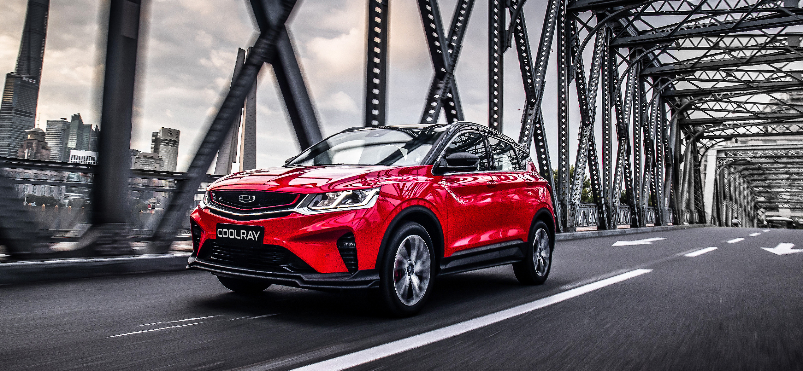
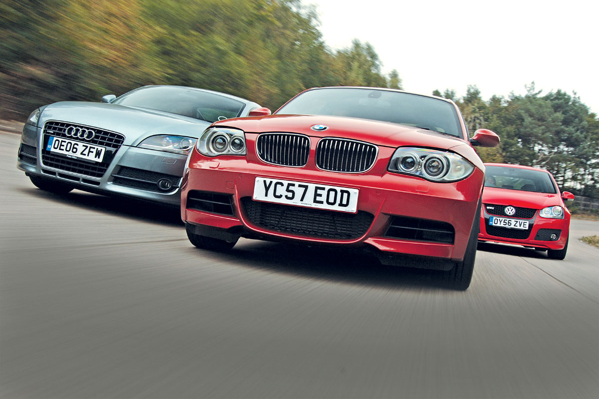
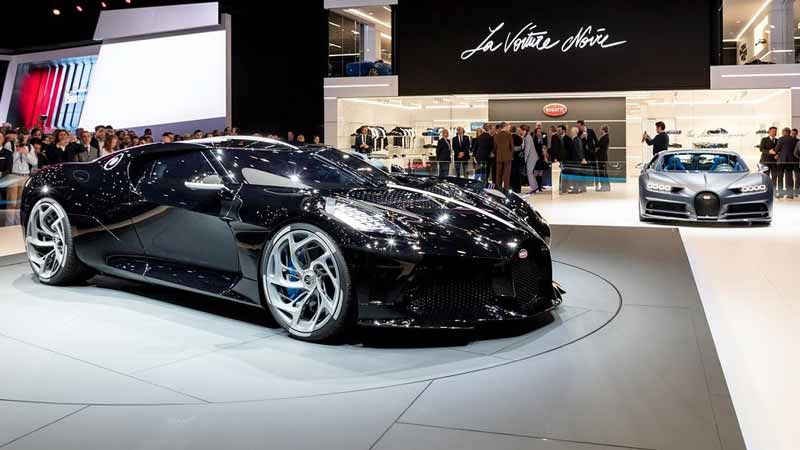

Марки автомобилей, производящихся в странах:

|
История первого автомобиля |  | Покупать или нет?... |  | Немного о важном |
|---|---|---|---|---|---|
|
Первый автомобиль, ставший серийной моделью, был запатентован в январе 1886 года. Патент под номером 37435 был выдан на трехколесный самодвижущийся экипаж. С этого трицикла началась история мирового автомобилестроения. Свое изобретение Бенц оснастил бензиновым двигателем внутреннего сгорания. |
Причины купить собственный автомобиль:
Вы еще не обзавелись личным автомобилем, но мечтаете его купить? Хорошенько подумайте: а стоит ли? Существует масса причин сделать этог. Здесь приведено лишь несколько из них, а дальше решайте сами. |
О звании абсолютного лидера продаж ведутся большие споры. Volkswagen продолжает считать Beetle/Kafer самым продаваемым автомобилем с результатом примерно в 22 миллиона экземпляров, поскольку за все время производства конструкция автомобиля не претерпела практически никаких изменений, в то время как автомобили, которые претерпели многочисленные рестайлинги и изменения конструкции, давно побили этот рекорд, например Volkswagen Golf. Если учитывать все поколения, то лидером станет Toyota Corolla с более чем 40 миллионами проданных машин, а результат Beetle поднимется на 1,7 миллиона автомобилей с учетом New Beetle и Beetle A5. |
|||
Концерн и после смерти его основателя продолжал идти в авангарде автомобилестроения. В 1936 году началось производство легковых автомобилей с дизельным мотором. Первой моделью с дизельным двигателем стал Mercedes-Benz 260 D. Дизельный двигатель назван в честь его разработчика - немецкого изобретателя Рудольфа Дизеля (Rudolf Diesel). Этот двигатель обладает довольно высоким коэффициентом полезного действия, а топливо стоит дешевле бензина. И так как экономичность была одним из основных преимуществ дизельных двигателей перед бензиновыми, первыми об их использовании задумались производители грузовых автомобилей. В 1924 году на берлинской автовыставке немецкий концерн MAN представил модель, работающую на дизеле. |
Топ-3 самых продаваемых марок автомобилей
|
||||
|
Факт о самой дорогой машине в мире: Уникальный Bugatti La Voiture Noire (фр. «черный автомобиль») стал одной из сенсаций Женевского автосалона-2019.Французский гиперкар, выпущенный в единственном экземпляре для Фердинанда Пиха, внука основателя Porsche, оценили в 16,5 млн евро (18,7 млн долларов). Технически «черный автомобиль» идентичен Bugatti Chiron: под капотом 8,0-литровый W16 с четырьмя турбинами, развивающий 1500 л.с. и 1600 Нм. |
||||